N1 Sensores digitales
Un sensor digital solo dice «sí» o «no». Para leerlo hace falta un montaje (G-V-S), un programa de tres bloques y un poco de criterio para interpretar lo que llega por el puerto serie. En este nivel aprendes el método con un ejemplo completo y lo aplicas a dos sensores que eliges tú del catálogo.
🎯 Cómo se lee un sensor digital
Un sensor digital solo entrega dos valores, 0 o 1. La placa lo lee con un pin configurado como entrada. Todos los módulos de este nivel se montan igual y se leen igual: lo único que cambia es el módulo y lo que significa su 0 y su 1.
1 · Montaje G-V-S
Cada módulo de tres pines tiene G (masa), V (alimentación) y S (señal). Se conecta a un conector de la placa de modo que G va a GND, V a V y S al pin de señal. Usaremos IO26 (D2) para todos los sensores de este nivel.
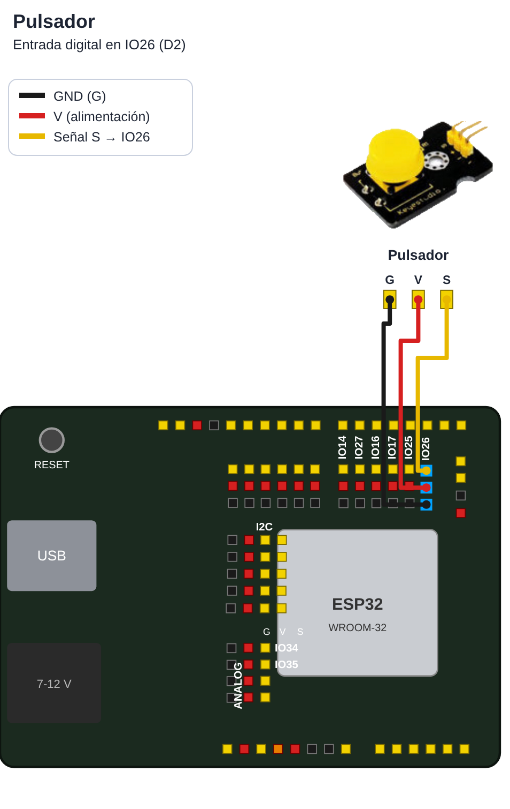
🛠️ Montaje y puesta en marcha
- Con la placa desenchufada, conecta G a GND, V a V y S a IO26. Pide a otra persona que lo revise con la lista de comprobación.
- Conecta la placa por USB, abre el Connector y STEAMakersBlocks y elige la placa «ESP32 STEAMakers».
- Construye el programa de abajo y pulsa Subir.
- Abre la Consola y observa qué números llegan.
2 · Programa: leer y enviar por el puerto serie
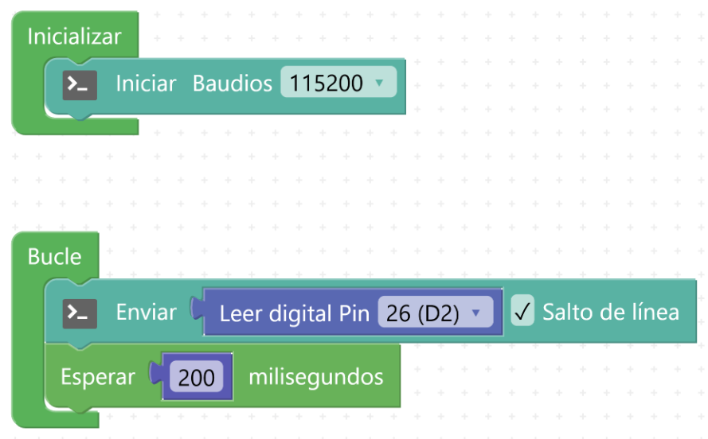
Algunos módulos tienen bloque propio en la categoría Sensores del editor (pulsador, táctil, PIR, obstáculos…). Hacen lo mismo con un nombre más claro. Si tu módulo no tiene bloque, usa «Leer digital Pin».
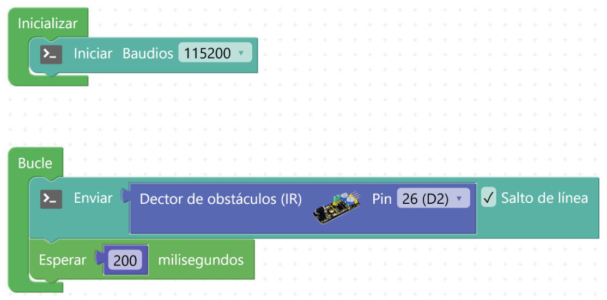
🔌 Ejemplo guiado: pulsador y LED
Con un solo sensor vamos a hacer todo lo que luego harás con el que elijas. El pulsador es el sensor digital más sencillo: o está pulsado o no lo está. El LED será la respuesta.
1 · Montaje
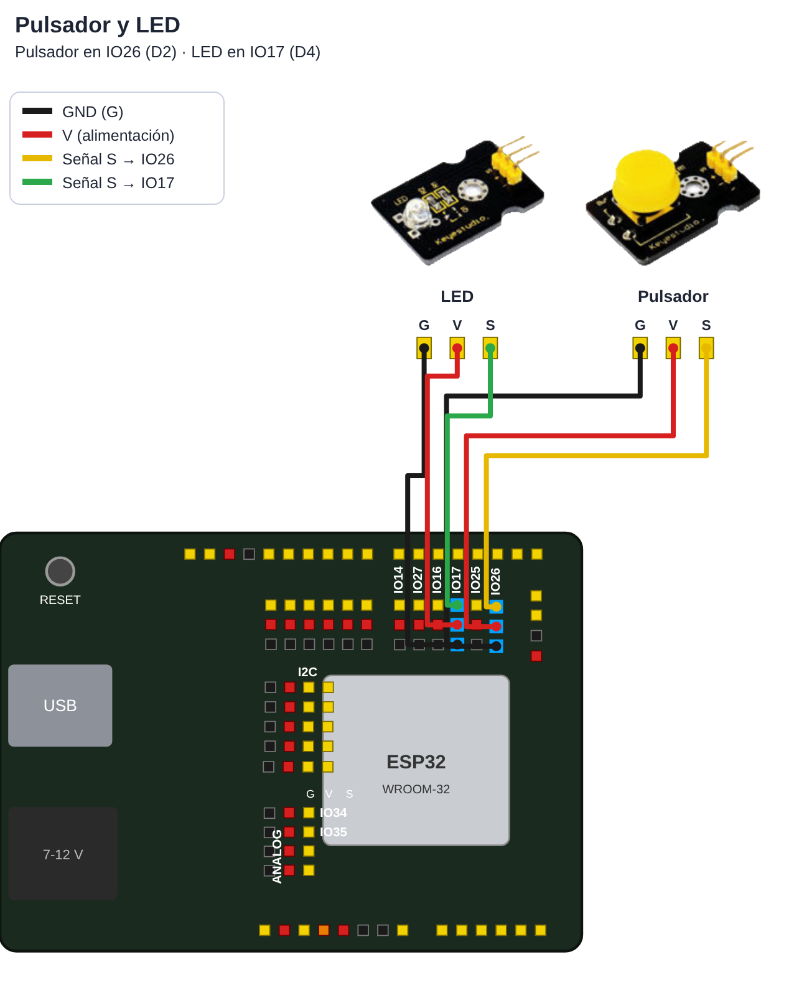
🛠️ Montaje y puesta en marcha
- Con la placa desenchufada, conecta el pulsador (G, V y S a IO26) y el módulo LED (G, V y S a IO17). Revisa con la lista de comprobación.
- Conecta por USB y construye primero el programa del paso 2.
- Sube el programa y abre la Consola.
2 · Primero mira qué valor da
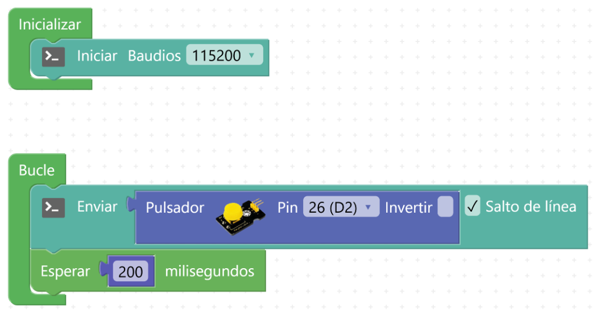
Antes de encender nada, comprueba en la consola qué llega en reposo y qué llega al pulsar. Es la medida que decide el resto del programa, y es lo que harás siempre con cualquier sensor.
3 · Después, actúa
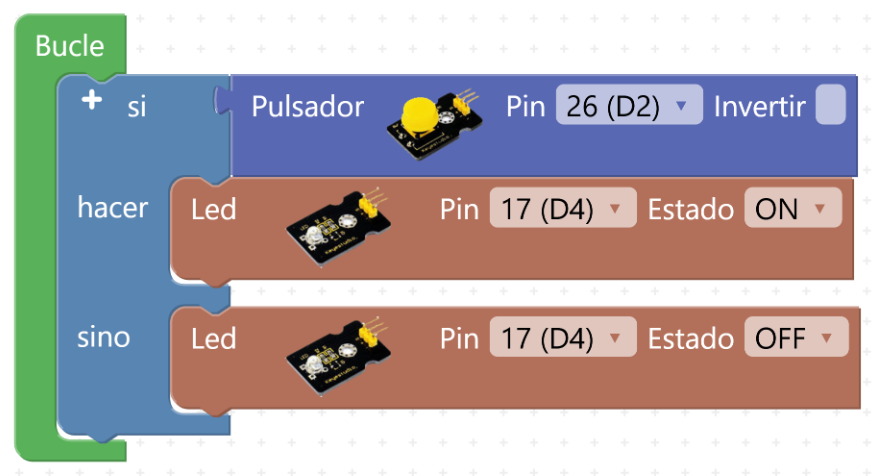
4 · La plantilla que vale para todos los sensores
- Leer el sensor (un bloque de la categoría Sensores, o «Leer digital Pin»).
- Decidir con «si… hacer… sino» según el valor.
- Actuar sobre una salida (LED, zumbador…).
Cambia solo el sensor; el resto del programa se queda igual. Si el sensor da el valor al revés de lo que esperabas, marca la casilla «Invertir» de su bloque en lugar de rehacer el programa.
Los actuadores (LED, semáforo, zumbadores, pantallas) se trabajan a fondo en la sección PI · Sensores + actuadores.
⏱️ El efecto rebote
Un pulsador es un contacto mecánico. Al pulsarlo, las láminas metálicas no se juntan de golpe: rebotan durante unos milisegundos y el pin lee varias veces 1, 0, 1, 0 antes de estabilizarse. La placa es tan rápida que ve todos esos cambios como pulsaciones distintas y un contador sumaría varias unidades con un solo toque.
Dos formas de evitarlo
- Con una espera. Tras detectar el cambio, el programa se detiene unas decenas de milisegundos con «Esperar» y solo entonces vuelve a leer. Es sencillo, pero mientras espera la placa no hace nada más.
- Con el bloque «Pulsador… se ha pulsado». Aplica por dentro un filtro antirrebote (en el código generado, 50 ms) y devuelve un 1 solo en el instante de la pulsación, aunque mantengas el dedo apretado.
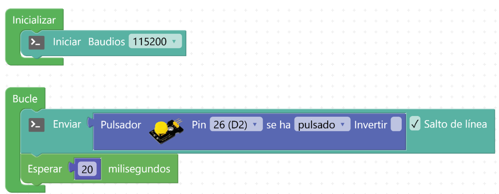
🔀 G-V-S no siempre va en el mismo orden
Hemos dicho que cada módulo tiene masa (G), alimentación (V) y señal (S), pero el orden en que aparecen depende del fabricante. En el taller hay material de distintas marcas y, si enchufas un módulo dando por hecho el orden, puedes invertir la alimentación y dañar el módulo o la placa. La regla es una sola: se lee la serigrafía del módulo y de la placa antes de conectar, siempre.
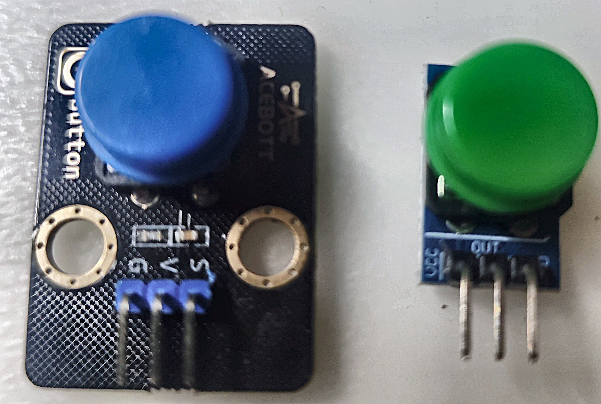
| Módulo | Rótulos en la serigrafía | Qué hay que comprobar |
|---|---|---|
| Módulos ACEBOTT del taller | G · V · S | Coinciden con las columnas G (negro), V (rojo) y S (amarillo) de la placa. En los módulos de otras marcas, como Keyestudio, lee igualmente la serigrafía. |
| Pulsador verde genérico | Señal (OUT) en el centro; alimentación y masa en los extremos | Lee en tu módulo cuál extremo es la masa y cuál la alimentación antes de enchufar. |
| Servo de 9 g (cable de tres colores) | Naranja = señal, rojo = alimentación, marrón = masa | El orden de los hilos es S-V-G, el contrario al de la placa: no lo enchufes sin pensar. |
| Pantalla LCD y OLED por I2C | GND · VCC · SDA · SCL (cuatro pines) | El orden de SDA y SCL cambia entre pantallas. Mira la serigrafía de la tuya. |
| Sensor de distancia de ultrasonidos | VCC · Trig · Echo · GND | Cuatro pines y no tres. No se conecta como un sensor G-V-S. |
Objetivo de esta sección: que sepas desenvolverte con kits de cualquier marca, no solo con el del taller. Un buen técnico lee la serigrafía; uno apresurado quema el módulo.
📋 Sensores digitales del kit
Esta es la lista de la que eliges. Si en tu kit falta uno, coge otro parecido: el método es el mismo. Si te atascas, cada sensor tiene debajo una pista con su esquema y su programa: ábrela después de intentarlo.
| Sensor | Qué detecta | Bloque propio en el editor | Detalle a tener en cuenta |
|---|---|---|---|
| Pulsador | Pulsación | «Pulsador» | Al mantenerlo pulsado el valor se repite; para contar usa «se ha pulsado». |
| Pulsador táctil | Contacto del dedo | «Pulsador táctil» | No tiene partes móviles: detecta capacidad eléctrica. |
| Inclinación | Posición del módulo | «Sensor de orientación» | Dentro hay una bolita o un contacto: puede dar rebotes al moverlo. |
| Reed | Imán cercano | «Interruptor magnético» | Contacto que se cierra con el campo del imán. |
| PIR | Movimiento de personas | «Detector de movimiento (PIR)» | Necesita unos segundos de estabilización al arrancar. |
| Obstáculos IR | Objeto delante | «Detector de obstáculos (IR)» | Suele tener un potenciómetro para ajustar la distancia. |
| Fotointerruptor | Objeto que corta el haz de luz | «Foto-interruptor» | Digital. Pasa algo entre las dos patas del módulo y la señal cambia. |
🧰 Pistas por sensor
Esquema y programa de cada sensor de la lista. Ábrelas después de intentarlo por tu cuenta con la plantilla. El montaje es siempre G-V-S: solo cambia el módulo y el pin.
Inclinación · IO26 (D2)
Dentro hay un contacto o una bolita: puede dar rebotes al moverlo. El programa enciende un LED en IO17 según la posición.
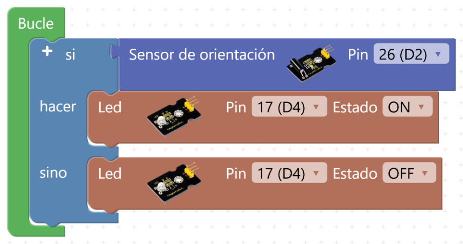
PIR (movimiento) · IO14 (D7)
Necesita unos segundos de estabilización al arrancar. El programa activa un zumbador en IO27 al detectar movimiento.
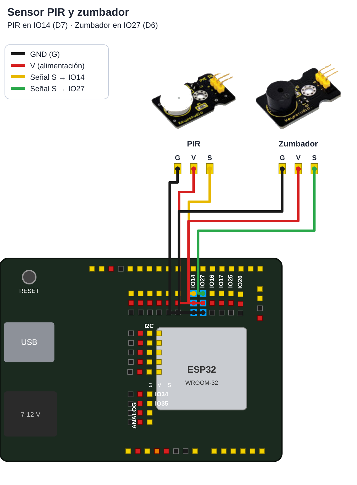
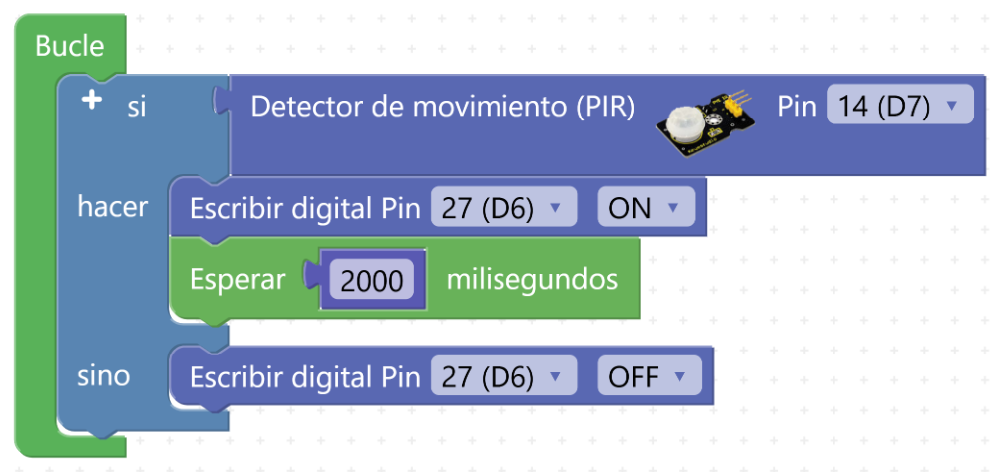
Obstáculos IR · IO26 (D2)
Suele tener un potenciómetro para ajustar la distancia de detección.
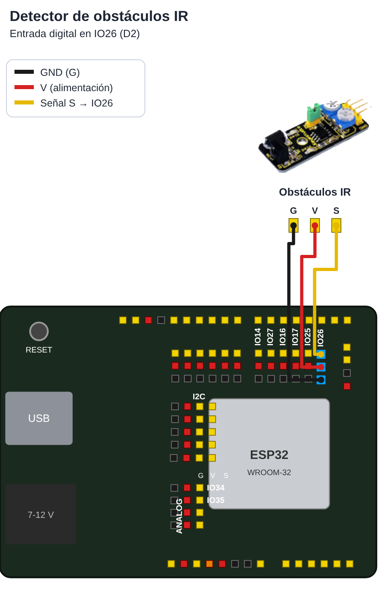
Pulsador táctil · IO26 (D2)
No tiene partes móviles: detecta el contacto del dedo. El programa enciende un LED en IO17.
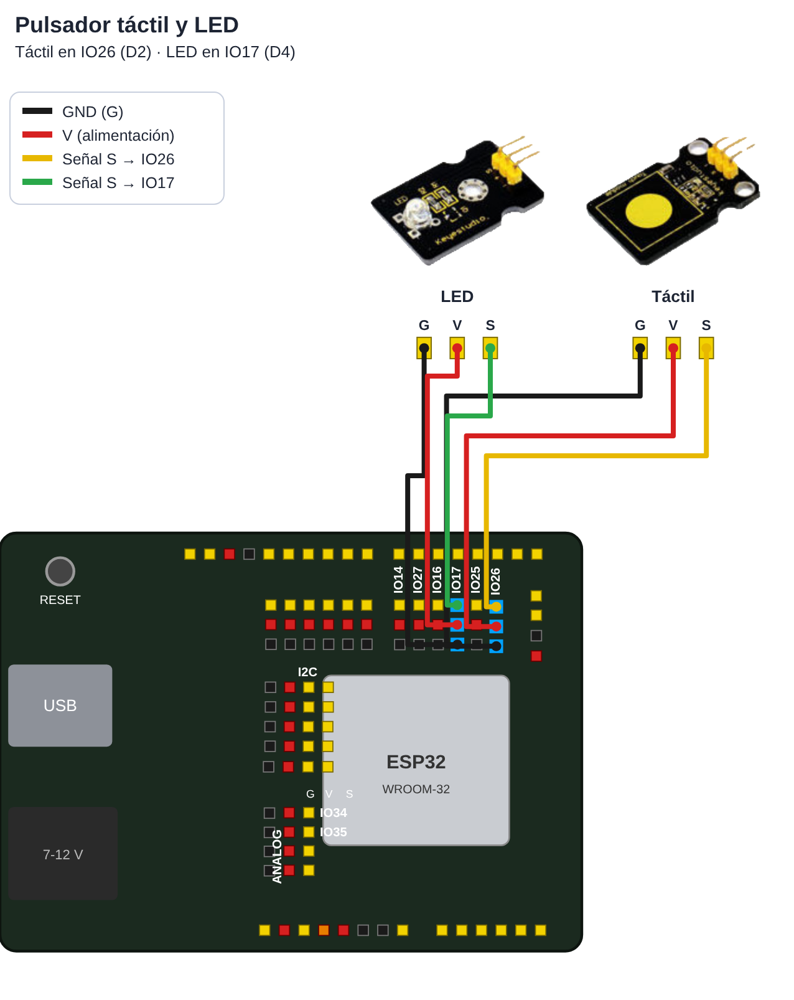
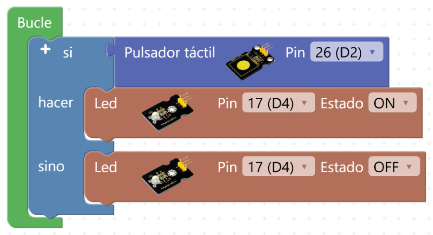
Reed (imán) · IO26 (D2)
Tiene bloque propio, «Interruptor magnético»; el programa de la imagen usa «Leer digital Pin», que da el mismo resultado. Acerca y aleja un imán.
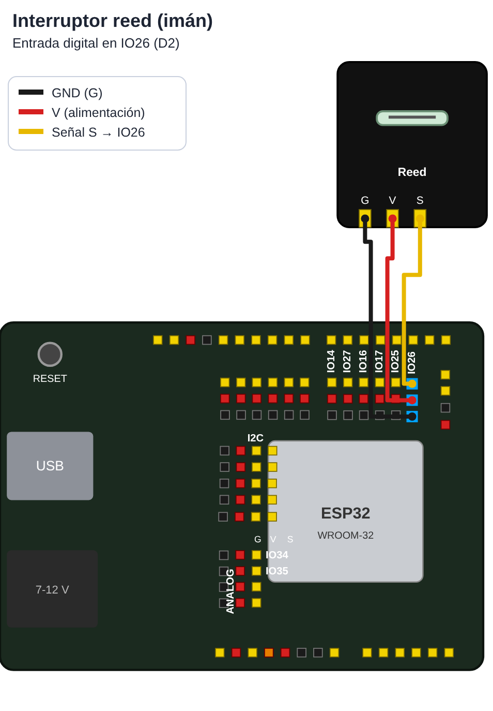
📝 Tu ficha
Elige dos sensores de la lista, uno por persona del grupo si sois dos en la placa, y completa una ficha para cada uno. La ficha es la evidencia que entregas en el porfolio, junto con la foto del montaje y una captura de la consola.
| Sensor | Pin de señal | Valor en reposo | Valor al activarlo | Observaciones (rebotes, tiempo de arranque, ajustes) |
|---|---|---|---|---|
Si no devuelve nada
Un sensor que no responde también es un resultado: anótalo en la ficha y revisa esta lista antes de pedir ayuda.
🔁 Retos de repaso
Hazlos con el sensor que elegiste. Cada nivel incluye al anterior.
Escribe una frase
Haz que la consola muestre «activado» o «reposo» en lugar de un número, con un bloque «si… hacer… sino».
Cuenta activaciones
Cuenta cuántas veces se activa el sensor. Comprueba qué pasa si lo mantienes activo y explica por qué el contador sube más de lo esperado.
Detecta el cambio
Suma solo cuando el sensor pasa de reposo a activado. Pruébalo con activaciones rápidas y razona si falla alguna.
💡 Pista para el reto Pro
Con el pulsador, el bloque «se ha pulsado» detecta el cambio sin que guardes el valor anterior. Con los demás sensores tendrás que guardarlo tú en una variable.
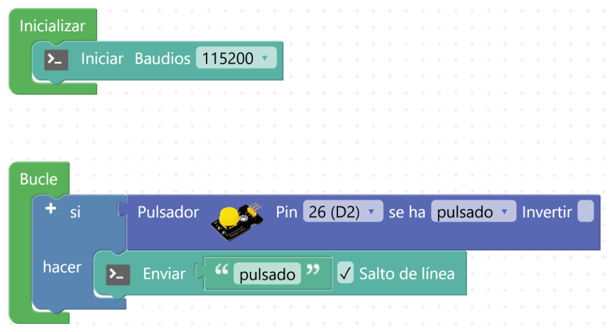
📓 Porfolio
- Las dos fichas completadas, con foto del montaje de cada sensor.
- Una captura de la consola con el valor en reposo y al activar.
- El programa de un reto de cada nivel.
- Un fallo que tuvisteis y cómo lo localizasteis.
✅ Comprueba lo que has aprendido
1. ¿Qué es un pulsador para la placa?
2. No sabes si tu pulsador da 1 o 0 al pulsarlo. ¿Qué haces?
3. Mantienes apretado el pulsador y el contador sube sin parar. ¿Por qué?
4. ¿Cuál de estos pines NO usarías para un módulo?
5. Con «esperar 4000 ms» en el semáforo, ¿qué ocurre con el pulsador?